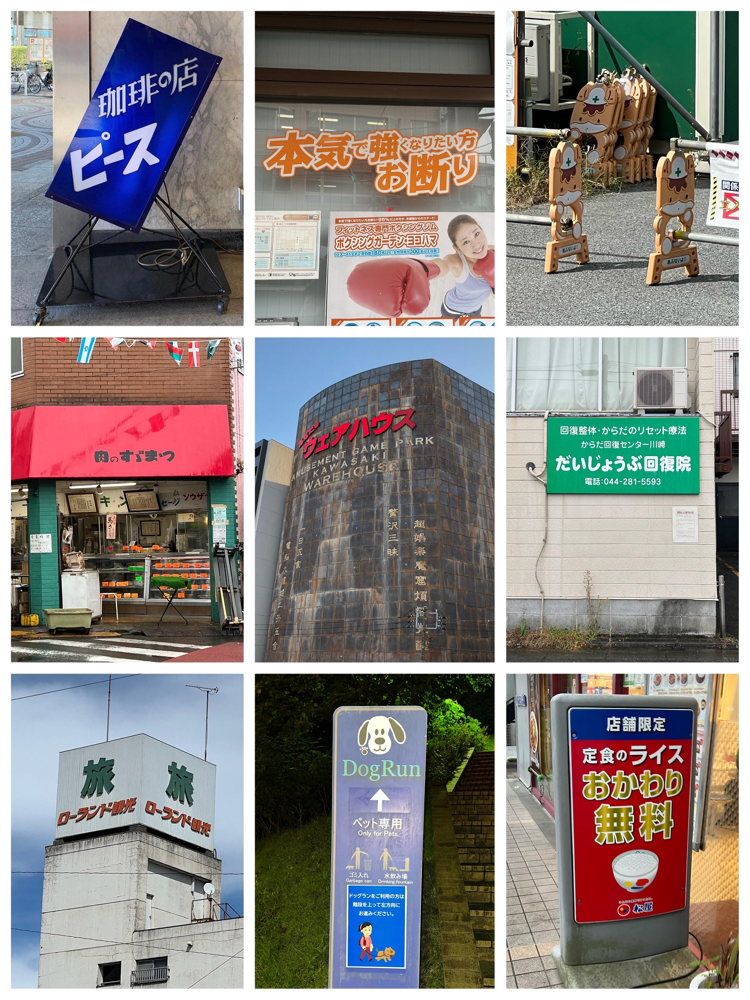

サンタのヒゲ
エアデール・テリア
クマ出没・山火事注意
2019.03.20 撮影者：私
北海道 ポプラファーム 小樽店
レトロな店が並ぶ小樽出抜小路内にある、サンタのヒゲの看板です。
メロンにソフトクリームをのせた商品が再現されています。
150cmくらいの高さでした。

2022.08.13 撮影者：私
東京都 世田谷区 瀬田交差点の角
エアデールテリアの大きな看板です。
情報の伝わりやすさより、好みが重視されているように感じます。
調べてみたところペットショップのようですが、現在営業しているかなど詳細は分かりませんでした。

2022.10.10 撮影者：私
群馬県 吾妻郡高山村尻高 山奥
この辺りにいくつも置かれたクマ出没注意の看板と、存在感のない山火事注意の看板です。
中学校から帰宅中、近道かもしれないと通ってみた道で見かけ、実際に山火事を見かけました。
年に何度かクマ出没の校内放送がありましたが、だいたいがこの辺りでした。
他にもたくさん撮影したので載せておきます。
